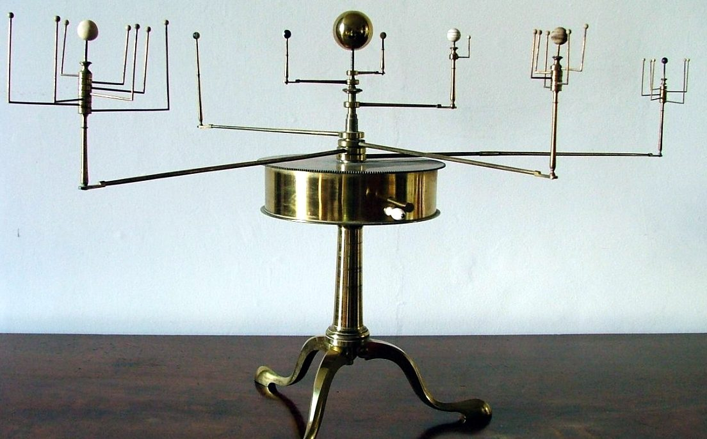
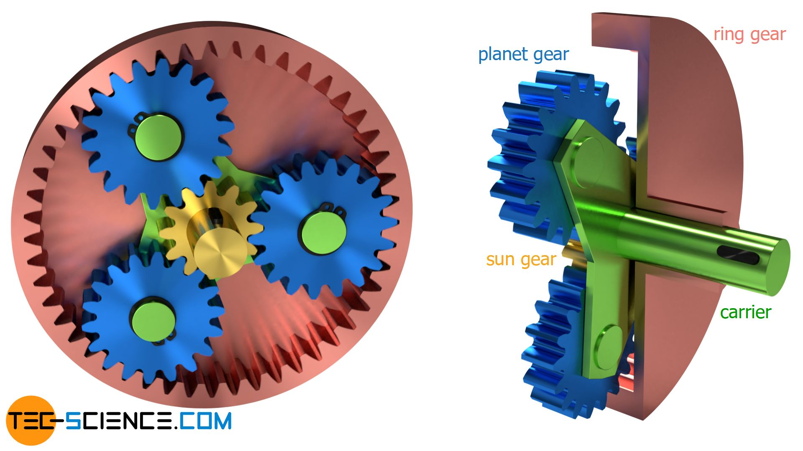

<div class="container-fluid">
### Week 3: Hand Tools and Fabrication
This week's assignment was to create something that moves. I first imagined creating a replica of a medieval orrery:

However, I quickly realized that the gear system of an orrery is much more complicated than I first imagined, involving dozens of offset gears that rotate at calculated intervals. However, there is one alternative that is somewhat similar: a planetary gearbox.
This system is an epicyclic gear composed of a sun gear (in the center) that turns four planetary gears, all contained within a larger ring gear.

I first began by designing a gearbox in Fusion360.
I researched how to create compatible gears in Fusion360, and learned that for gears to mesh, their modules must be the same. In addition, for gears to fit properly in a planetary configuration, the diametral pitch of all the gears in a straight line (two planetary gears and the sun gear) must equal the diametral pitch of the ring gear.
I began by creating a gear with a pitch diameter of 240 mm and a module of 7.5, meaning that it has 32 teeth. I gave it a backlash of -0.2 mm. I then drew a circle with a diameter of 250 mm around the gear, and deleted the gear, leaving me with a ring gear with a module of 7.5, diametral pitch of 240 mm, and backlash of 0.2 mm (when I cut out the gear, the backlash reversed to become positive).
I then created a sun gear with a module of 7.5, pitch diameter of 60 (resulting in 8 teeth), and a backlash of 0.2 mm.
I finally created four planetary gears, each with a module of 7.5, pitch diameter of 90, and a backlash of 0.2 mm.
The pitch diameter of two planetary gears and a sun gear added together equals the pitch diameter of the ring gear (240 mm), meaning that all the gears will mesh together correctly - at least theoretically.